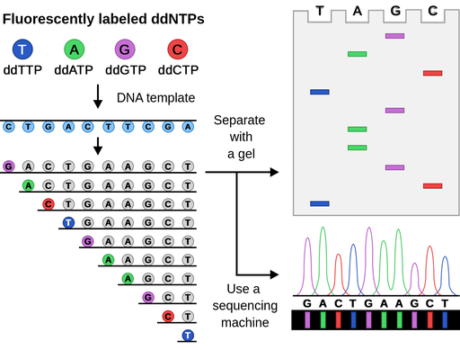
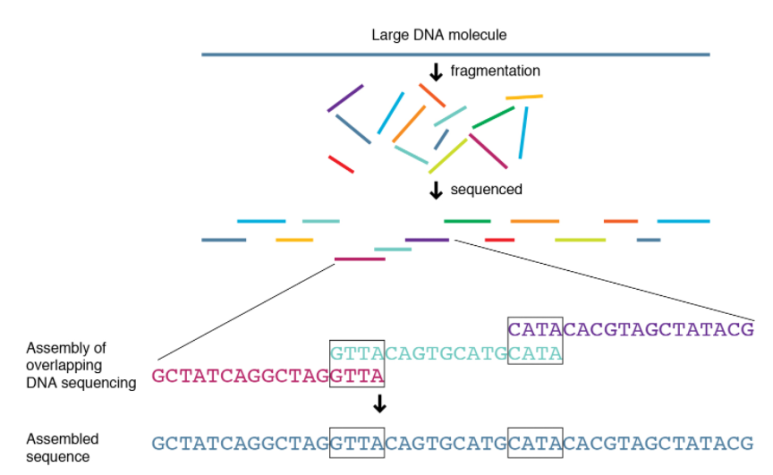

생물학에서 인간 유전자 염기서열은 궁극의 정보였다.
사람의 염기서열은 개개인의 생물적인 특징을 드러내는데,
이러한 염기서열이 규명되어야 인간 유전자에 대한 연구를 본격적으로 할 수 있게 된다.
그렇게 1990년, 인간 DNA 전체의 염기쌍을 해독하려고 하는
인간 게놈 프로젝트(HGP)가 시작되었다.
Sanger Sequencing
인간 게놈 프로젝트에는 다양한 염기서열 분석 방식이 사용되었다.
고전적인 방식으로 생거의 생거 방식(sanger sequencing)이 있다.
DNA 복제효소가 DNA를 합성하는 과정에서
DNA 가닥을 계속 합성되도록 하는 디옥시뉴클레오티드(deoxynucleotide, dNTP)와
DNA 가닥이 합성 도중 중단되도록 하는
디디오식뉴클레오 티드(dideoxynucleotide, ddNTP)를
적절한 비율로 섞어주어 연새반응 정지를 일으켜 무작위적으로 다양한 길이의
DNA 합성 조각들이 만들어지도록 하는 기술이다.
이 가닥을 크기별로 구분하면 DNA의 염기서열을 알 수 있게 된다.
하지만 생거 시퀀싱은 많은 시간과 비용이 소요되어 효율이 낮다는 한계를 가지고 있다.

Shotgun Sequencing
생거 시퀀싱의 단점을 극복하고자 차세대 시퀀서(NGS)인 샷건 시퀀싱(shotgun seqeuncing)이 개발되었다.
이는 컴퓨터를 활용하여 산탄총 방식으로 염기서열을 재구성하는 기술이다.
산탄총이란 적당히 조준한 지점 주위로 여러 개의 탄알을 날려서 주변에
있을 사냥감을 운 좋게 맞추는 방식이다.
이 방식의 알고리즘은 이러하다:
1. 자르기 유전자 실을 여러 개 복사하여, 임의로 짧게 자른다.
같은 유전자 실 여러개를 잘랐기 때문에 토막들은 서로 어느정도 겹친다.
각각의 토막의 염기서열을 판독한다.
2. 재구성하기 수많은 염기서열 토막을 모두 모아서 하나의 실로 재구성하는 과정이다.
컴퓨터는 양 끝의 염기서열이 겹치는 토막을 차례로 찾아서 하나의 실로 재구성한다.
이는 문자열 토막들이 주어졌을 때, 이 모두를 포함하는 가장 짧은 하나의 문자열을
찾는 문제가 된다.

컴퓨터 활용의 효율성
인간 유전자에는 약 30억 개의 글자로 이뤄진 실이 있다.
실험실에서 쓰는 기자재 한 개로는 30억 개의 염기 가닥 중 약
100여개의 염기만을 판독 할 수 있었다.
하지만 이 문제를 컴퓨터를 이용하여 보다 저렴하게 과감한
방식으로 해결할 수 있게 되었다.
이처럼 컴퓨터는 다양한 능력으로 인간을 대신해주어,
인간 지능의 확상을 실현시켜준다.
인간과 컴퓨터가 손을 맞잡는다면 우리는 더 넓은
세상을 향해 한 걸음씩 나아갈 수 있을 것이다.